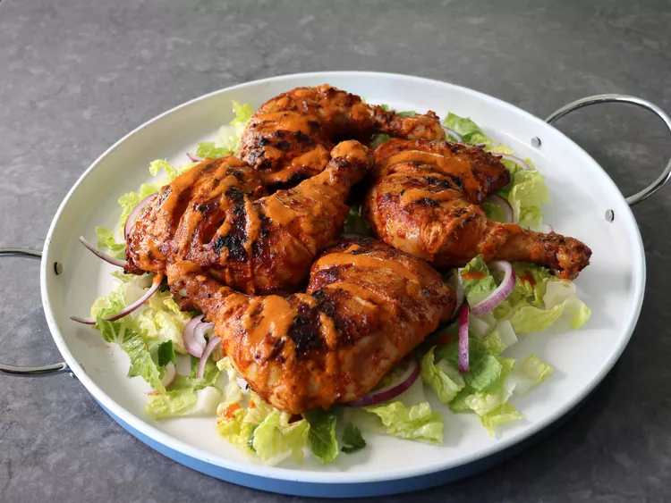

Peri Peri Chicken

Description
This peri peri chicken is made with my take on African peri peri sauce using fresh and dried chiles. The marinade is incredibly flavorful and gives the chicken a beautiful color as well.
- 6 cloves garlic
- 4 red Fresno chili peppers, seeded
- 1 habanero pepper, seeded
- 1/2 cup diced red bell pepper, or other sweet pepper
- 1 tablespoon smoked paprika
Home